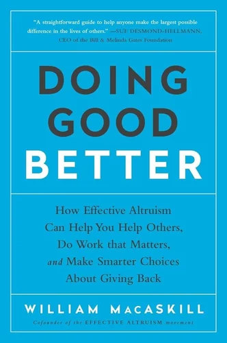
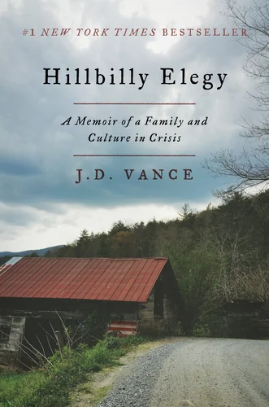
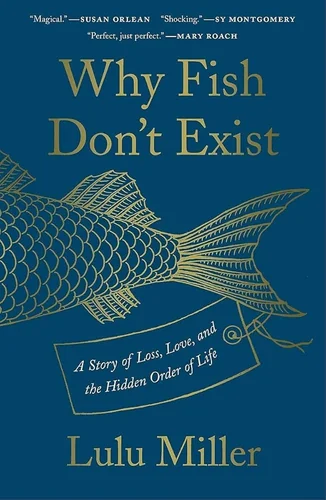
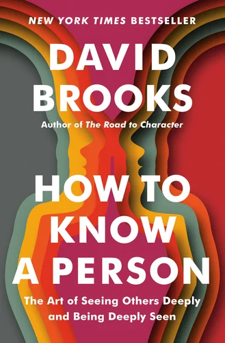
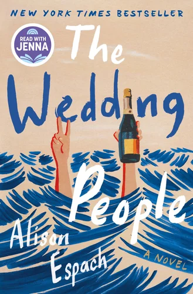
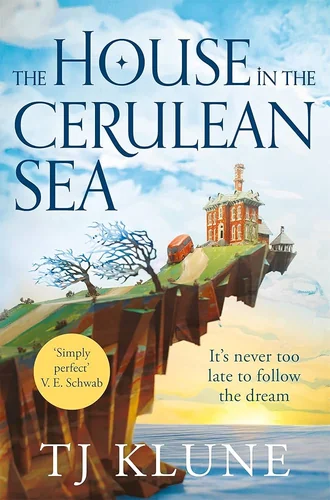
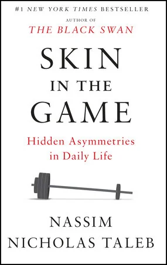
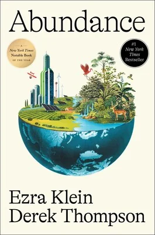

Reading list
Books on people, policy, design, and fiction. Select a book to read a short note.
-

Doing Good Better NotesUsing evidence to turn good intentions into meaningful impact.
-
Good Services Notes
What makes a service functional, humane, and effective.
-

Hillbilly Elegy NotesA memoir about family, class, and the tension between personal agency and structural constraints.
-

Why Fish Don’t Exist NotesNatural history meets existential inquiry: how our need for order can reveal and distort truth.
-

How to Know a Person NotesOn deep listening, curiosity, and helping people feel seen.
-

The Wedding People NotesLove, friendship, and the performance of happiness, through the theatre of a wedding.
-

The House in the Cerulean Sea NotesChosen family, inclusion, and meeting bureaucracy with empathy.
-

Skin in the Game NotesOn risk, responsibility, and who bears the consequences of decisions.
-

Abundance NotesOn building more of what people need, from housing to clean energy.